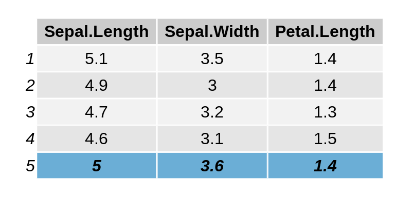
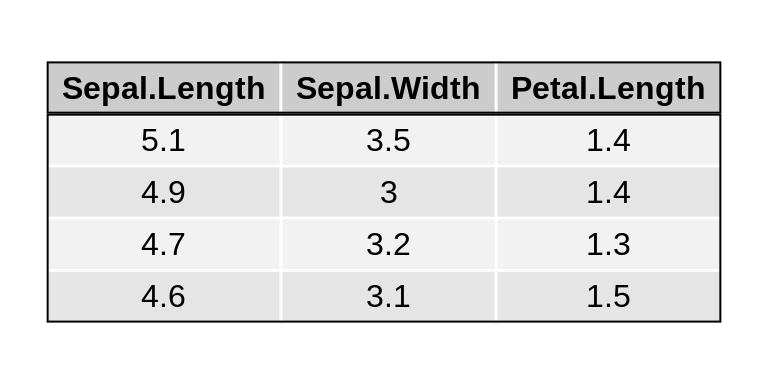

Displaying tables as grid graphics
Baptiste Auguie
2019-12-31
tableGrob.RmdTabular data is usually formatted outside the graphics device, e.g via LaTeX, or html tables. However, in some cases it may be convenient to display small tables alongside graphics. A couple of packages offer this possibility with base graphics (plotrix for instance); the gridExtra provides the pair of tableGrob/grid.table functions for this purpose.
Note: This vignette uses the development version of gridExtra, some features may not be yet available in the released version.
Spacing
The spacing of each row/column is automatic, and will adjust to bigger cell contents. Plotmath notation may be used, with the parse=TRUE argument. Note that this is applied to individual strings of text, and reverts to standard text if parsing fails (this is useful when mixing multiline text with plotmath in different cells).
Aesthetic formatting
The formatting is controlled by themes, which are nested lists of graphical parameters. See ttheme_default and ttheme_minimal for two built-in examples. Changing a few parameters at a time amounts to modifying the list with the new values.
tt1 <- ttheme_default()
tt2 <- ttheme_minimal()
tt3 <- ttheme_minimal(
core=list(bg_params = list(fill = blues9[1:4], col=NA),
fg_params=list(fontface=3)),
colhead=list(fg_params=list(col="navyblue", fontface=4L)),
rowhead=list(fg_params=list(col="orange", fontface=3L)))
grid.arrange(
tableGrob(iris[1:4, 1:2], theme=tt1),
tableGrob(iris[1:4, 1:2], theme=tt2),
tableGrob(iris[1:4, 1:2], theme=tt3),
nrow=1)If the formatting values are fewer than the number of cells, they are recycled along columns,
t1 <- ttheme_default(core=list(
fg_params=list(fontface=c(rep("plain", 4), "bold.italic")),
bg_params = list(fill=c(rep(c("grey95", "grey90"),
length.out=4), "#6BAED6"),
alpha = rep(c(1,0.5), each=5))
))
grid.table(iris[1:5, 1:3], theme = t1)
Text justification
The text labels can be justified; the default is “centre” for the core and header, and “right” for the row names. These settings can be adjusted by passing the relevant parameters of textGrob via the theme nested lists,
tt1 <- ttheme_default()
tt2 <- ttheme_default(core=list(fg_params=list(hjust=1, x=0.9)),
rowhead=list(fg_params=list(hjust=1, x=0.95)))
tt3 <- ttheme_default(core=list(fg_params=list(hjust=0, x=0.1)),
rowhead=list(fg_params=list(hjust=0, x=0)))
grid.arrange(
tableGrob(mtcars[1:4, 1:2], theme=tt1),
tableGrob(mtcars[1:4, 1:2], theme=tt2),
tableGrob(mtcars[1:4, 1:2], theme=tt3),
nrow=1)Further gtable processing and integration
Being based on gtable, the table can be further processed. In particular, we may edit the cell sizes to align with other content on the page.
g <- g2 <- tableGrob(iris[1:4, 1:3], cols = NULL, rows=NULL)
g2$widths <- unit(rep(1/ncol(g2), ncol(g2)), "npc")
grid.arrange(rectGrob(), rectGrob(), nrow=1)
grid.arrange(g, g2, nrow=1, newpage = FALSE)The alignment of several tables can be achieved with the combine function (adapted from gtable:::join),
d1 <- PlantGrowth[1:3,1, drop=FALSE]
d2 <- PlantGrowth[1:2,1:2]
g1 <- tableGrob(d1)
g2 <- tableGrob(d2)
haligned <- gtable_combine(g1,g2, along=1)
valigned <- gtable_combine(g1,g2, along=2)
grid.newpage()
grid.arrange(haligned, valigned, ncol=2)Borders and separators
Other grobs such as separating lines and rectangles (borders, boxes) may be added. In this case, keep in mind that row, column and cell numbering includes the column of row labels and the row of column labels if they are present. Let us illustrate this by adding some borders (using rectGrob) to a simple table without row numbers. We’ll add two actually, to give a nice effect of a heavy line under the row of column headers.
library(gtable)
g <- tableGrob(iris[1:4, 1:3], rows = NULL)
g <- gtable_add_grob(g,
grobs = rectGrob(gp = gpar(fill = NA, lwd = 2)),
t = 2, b = nrow(g), l = 1, r = ncol(g))
g <- gtable_add_grob(g,
grobs = rectGrob(gp = gpar(fill = NA, lwd = 2)),
t = 1, l = 1, r = ncol(g))
grid.draw(g)
Note that when using rectGrob the top, bottom, left and right arguments (t, b, l, r) are the rows and columns which will be inside the rectangle. If we repeat the above code almost exactly, but don’t suppress the column of row labels, we see that column 1 is now the column of row labels (and it doesn’t look that good either, but that’s not our point).
g <- tableGrob(iris[1:4, 1:3])
g <- gtable_add_grob(g,
grobs = rectGrob(gp = gpar(fill = NA, lwd = 2)),
t = 2, b = nrow(g), l = 1, r = ncol(g))
g <- gtable_add_grob(g,
grobs = rectGrob(gp = gpar(fill = NA, lwd = 2)),
t = 1, l = 1, r = ncol(g))
grid.draw(g)When adding line segments to separate rows and columns using segmentsGrob, the row and column numbering scheme is the same (it includes any row or column labels). When working with line segments, you should keep in mind the default coordinate values for segmentsGrob. They are x0 = 0, y0 = 0, x1 = 1, y1 = 1, all in npc, relative to the cell(s) you are modifying, with the lower left corner being 0,0. For clarity, we show all the arguments in these examples. With this in mind, to add a line across the bottom of a single cell, use:
g <- tableGrob(iris[1:4, 1:3])
g <- gtable_add_grob(g,
grobs = segmentsGrob( # line across the bottom
x0 = unit(0,"npc"),
y0 = unit(0,"npc"),
x1 = unit(1,"npc"),
y1 = unit(0,"npc"),
gp = gpar(lwd = 2.0)),
t = 3, b = 3, l = 3, r = 3)
grid.draw(g)and to add a line to the left side:
g <- tableGrob(iris[1:4, 1:3])
g <- gtable_add_grob(g,
grobs = segmentsGrob( # line across the bottom
x0 = unit(0,"npc"),
y0 = unit(0,"npc"),
x1 = unit(0,"npc"),
y1 = unit(1,"npc"),
gp = gpar(lwd = 2.0)),
t = 3, b = 3, l = 3, r = 3)
grid.draw(g)Perhaps you’d like to cross out a cell. This can be done with two diagonal lines combined via a grobTree:
g <- tableGrob(iris[1:4, 1:3])
g <- gtable_add_grob(g,
grobs = grobTree(
segmentsGrob( # diagonal line ul -> lr
x0 = unit(0,"npc"),
y0 = unit(1,"npc"),
x1 = unit(1,"npc"),
y1 = unit(0,"npc"),
gp = gpar(lwd = 2.0)),
segmentsGrob( # diagonal line ll -> ur
x0 = unit(0,"npc"),
y0 = unit(0,"npc"),
x1 = unit(1,"npc"),
y1 = unit(1,"npc"),
gp = gpar(lwd = 2.0))),
t = 3, b = 3, l = 3, r = 3)
grid.draw(g)If you have many cells to decorate you can use replicate to create create the segments. Just keep the tableGrob numbering scheme in mind.
g <- tableGrob(head(iris), theme = ttheme_minimal())
separators <- replicate(ncol(g) - 2,
segmentsGrob(x1 = unit(0, "npc"), gp=gpar(lty=2)),
simplify=FALSE)
## add vertical lines on the left side of columns (after 2nd)
g <- gtable::gtable_add_grob(g, grobs = separators,
t = 2, b = nrow(g), l = seq_len(ncol(g)-2)+2)
grid.draw(g)Accessing existing grobs in the table
We may also access and modify the original content of individual cells, e.g. to highlight a value.
g <- tableGrob(iris[1:4, 1:3])
find_cell <- function(table, row, col, name="core-fg"){
l <- table$layout
which(l$t==row & l$l==col & l$name==name)
}
ind <- find_cell(g, 3, 2, "core-fg")
ind2 <- find_cell(g, 2, 3, "core-bg")
g$grobs[ind][[1]][["gp"]] <- gpar(fontsize=15, fontface="bold")
g$grobs[ind2][[1]][["gp"]] <- gpar(fill="darkolivegreen1", col = "darkolivegreen4", lwd=5)
grid.draw(g)
Faster tables: an alternative grid function
The tableGrob function can be very slow; unfortunately this is the price to pay for its versatility and easier implementation. We use individual textGrob and rectGrob elements for each cell, instead of relying on the vectorised implementation of these functions. The reason is practical: it is much easier to place, measure, and customise individual grobs, than modify the graphical parameters and positions of a single vectorised grob. An alternative function is presented below, using this vectorised approach, but lacking many of the customisations of tableGrob.
grid.ftable <- function(d, padding = unit(4, "mm"), ...) {
nc <- ncol(d)
nr <- nrow(d)
## character table with added row and column names
extended_matrix <- cbind(c("", rownames(d)),
rbind(colnames(d),
as.matrix(d)))
## string width and height
w <- apply(extended_matrix, 2, strwidth, "inch")
h <- apply(extended_matrix, 2, strheight, "inch")
widths <- apply(w, 2, max)
heights <- apply(h, 1, max)
padding <- convertUnit(padding, unitTo = "in", valueOnly = TRUE)
x <- cumsum(widths + padding) - 0.5 * padding
y <- cumsum(heights + padding) - padding
rg <- rectGrob(x = unit(x - widths/2, "in"),
y = unit(1, "npc") - unit(rep(y, each = nc + 1), "in"),
width = unit(widths + padding, "in"),
height = unit(heights + padding, "in"))
tg <- textGrob(c(t(extended_matrix)), x = unit(x - widths/2, "in"),
y = unit(1, "npc") - unit(rep(y, each = nc + 1), "in"),
just = "center")
g <- gTree(children = gList(rg, tg), ...,
x = x, y = y, widths = widths, heights = heights)
grid.draw(g)
invisible(g)
}
grid.newpage()
grid.ftable(head(iris, 4), gp = gpar(fill = rep(c("grey90", "grey95"), each = 6)))